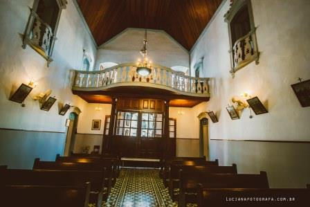
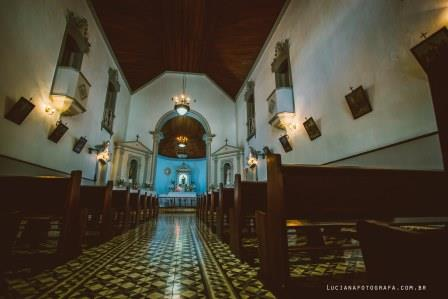
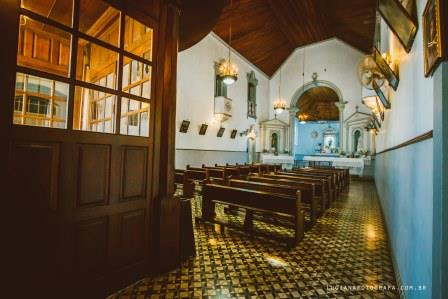

Igreja São Benedito
{kind=link}
Um exemplo de preservação histórica, a bela Igreja de São Benedito encontra-se no centro de São Roque. Construída por escravos em 1855, utilizando na sua construção taipa de pilão. Possui um estilo colonial típico da época de sua construção. Ficou abandonada por um período, servindo de depósito para a Igreja Matriz. Mesmo assim a igreja não perdeu sua originalidade.
Após passar por reforma, a igreja voltou a atender a população com missas. Em seu belo altar em forma de concha côncavo encontra-se a imagem de São Benedito e em demais locais da igreja é possível encontrar objetos de grande valor religioso. Devido sua arquitetura,o local apresenta excelente acústica e instalações para grupos de corais, o que faz com que receba não só eventos religiosos, mas também diversos eventos musicais ao longo do ano. Todos os anos, no dia 6 de Janeiro é realizada uma missa e procissão em homenagem a São Benedito.
Negro, filho de escravos, analfabeto, tornou-se um dos santos mais populares no Brasil, cuja devoção foi trazida pelos portugueses. Benedito nasceu por volta do ano 1526, em São Filadelfo, nas proximidades de Messina, na Silícia. Foi alforriado, ainda bem jovem, por Manasseri, um professor siciliano. São Benedito também é chamado de Santo Mouro. Sempre trabalhou no campo como pastor de rebanhos, de onde tirava seu próprio sustento, ajudava seus pais e ainda alguns pobres, aos 21 anos, é convidado por Jerônimo Lanza, eremita franciscano, a tornar-se um eremita.
Com a morte de Jerônimo, foi escolhido como superior do eremitério. Em 1564, com a extinção do eremitério, decretada por Pio IV, o grupo se dissolve e ele parte para Palermo. No Convento Santa Maria de Jesus, dos frades Franciscanos, ele é aceito como irmão leigo. No início, Benedito serve como cozinheiro da Ordem. Com o tempo, passa a ocupar outros cargos, como mestre dos noviços. Em 1578 foi nomeado guardião ou superior do convento, cargo que resistiu muito em aceitar, por ser analfabeto.
Seu carisma, simpatia e compreensão o tornou um conselheiro religioso admirado por todos. Nos últimos anos de vida, abandonou seu posto e voltou a servir como cozinheiro. Benedito sabia, como ninguém, manifestar um amor desinteressado, ser condescendente com as faltas e as fraquezas alheias, era zeloso e carinhoso com os doentes e os necessitados, era terno e sábio, possuía o dom de penetrar as mentes e os corações.
{kind=link}
A tradição popular enriqueceu sua vida com numerosos milagres. Em 1589, caiu gravemente doente e Deus lhe revelou que seu fim estava próximo. Na recepção dos últimos sacramentos, experimentou como que um antegozo das alegrias celestes. Morreu docemente no dia 4 de abril desse mesmo ano. (Fonte: http://www.informasaoroque.com.br/brasital.htm)
{kind=link}